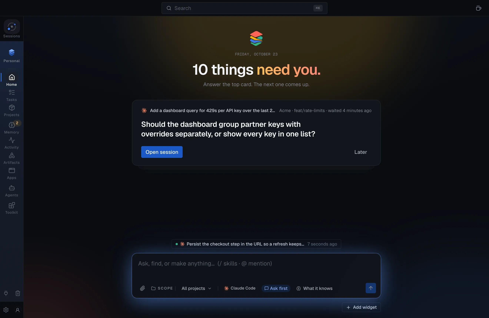
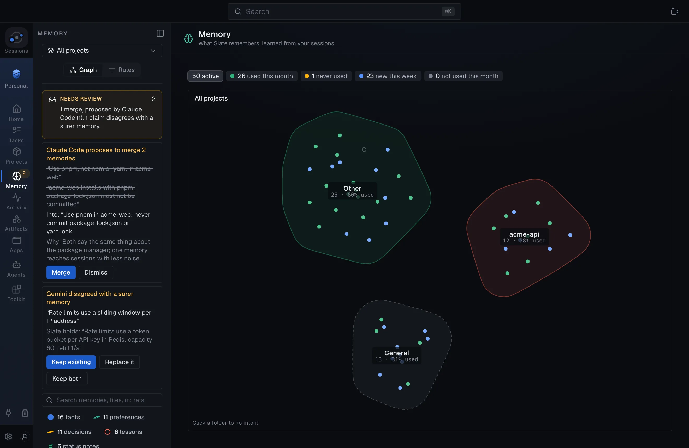
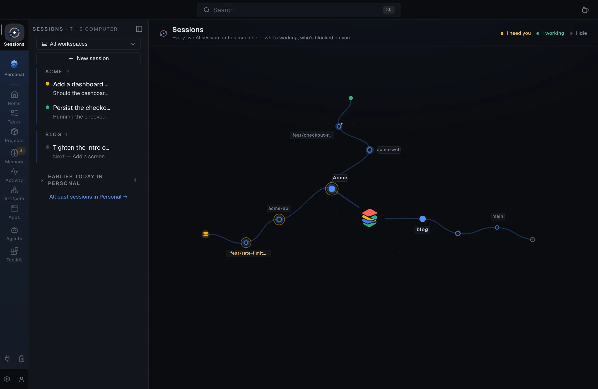
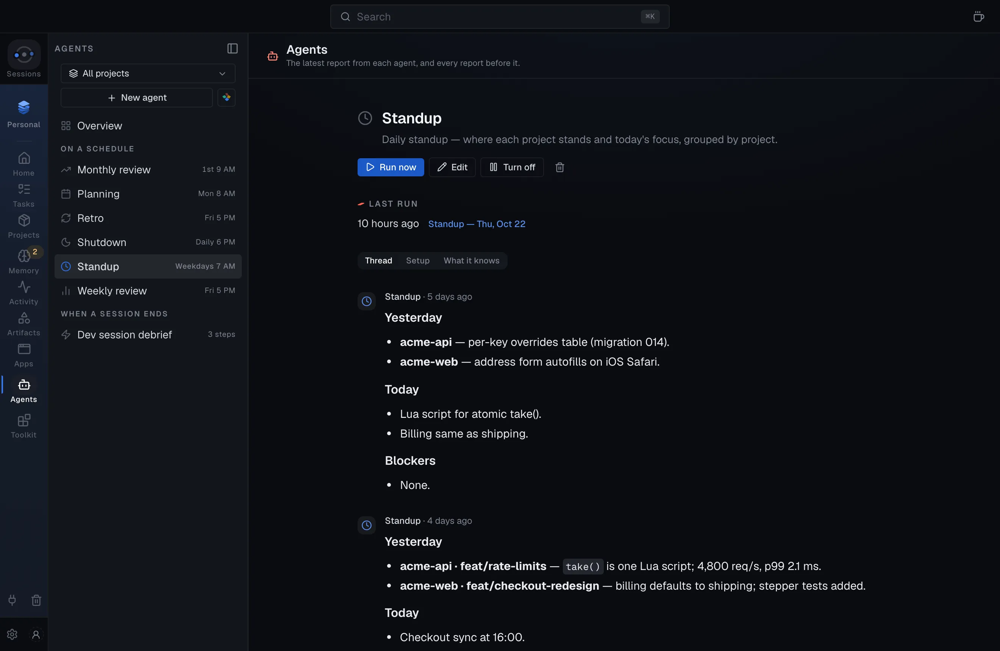
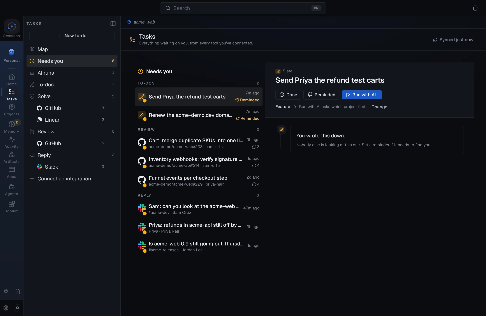
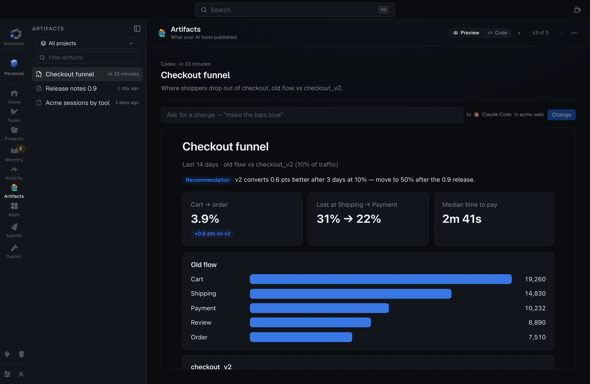
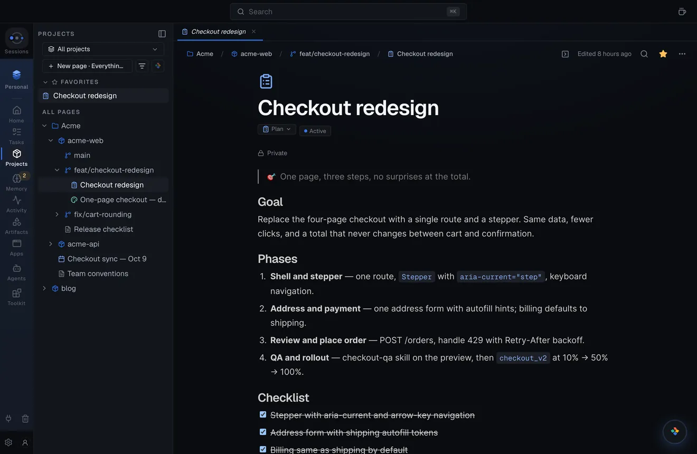
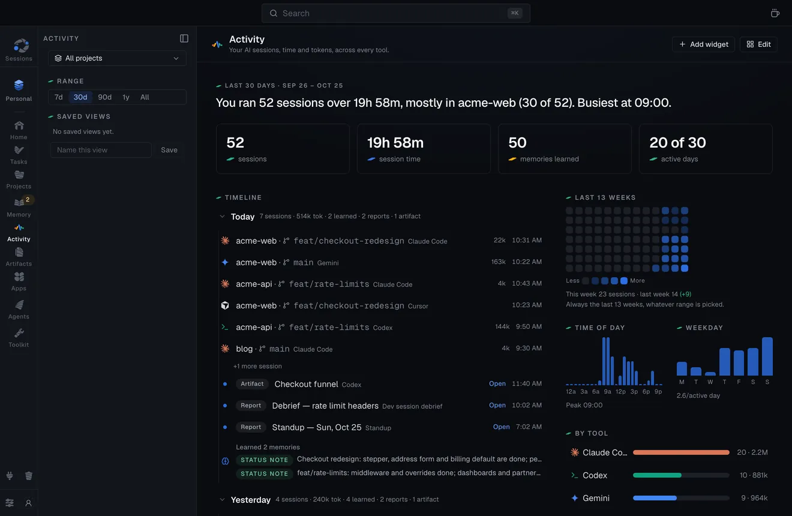
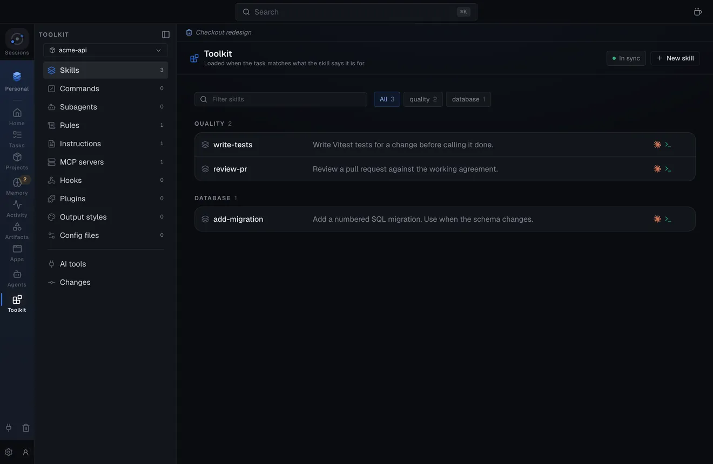

Give every AI tool the same memory.
One command. About thirty seconds. Everything stays on your Mac.
curl -fsSL https://liozelmalem-star.github.io/slate-releases/install.sh | bash
Claude Code, Codex, Cursor, Gemini and OpenCode each start from zero. Slate is the layer between them: it sees every session, remembers what each one learned, and hands it to the next one the moment it needs it — then keeps working for you while you're away. All of it on your Mac.
curl -fsSL https://liozelmalem-star.github.io/slate-releases/install.sh | bash
macOS · Apple Silicon·Free during the alpha·No account·No API keys· Read the install script

Home opens on what needs you — a session waiting on an answer, an agent asking first — and a box to ask anything.
Works with the AI tools you already use — no API keys, under your own sign-in
Measured over 89 real sessions — same model, same instructions, with and without Slate's hooks. Every other AI memory product ships the instruction alone.
Why Slate
Each session starts blank. What Claude Code worked out on Tuesday, Cursor has never heard of on Wednesday — so you explain it again.
Sessions run in different tools and folders. The one that stopped to ask you a question has been sitting there for twenty minutes.
Standups, reviews, the ticket you owe a reply. None of it happens unless you do it, and none of it is the work you sat down to do.
Slate fixes it the way your own memory works: it notices, remembers, recalls and acts — for every AI tool at once, on your Mac, in files you own.
Every session from every AI tool is captured as it happens, from the transcripts the tools already write. Nothing to remember to do, nothing to paste.
Decisions with their reasons, preferences, lessons, where each branch stands — each tied to the file it's about, and flagged when that code changes.
When any tool starts a task, the right memory is already there — whichever tool you open next. Not when you think to ask: when the work needs it.
Agents run your standup, debrief each session and draft the reply you owe — on the AI tool you already pay for, inside rules you set.
Why "Slate"? A slate is the clapperboard that syncs separate cameras onto one timeline. Your AI tools are the cameras.
Memory
Slate is an MCP server. Your tools recall at the start of a task and remember at the end — decisions with their reasons, preferences, lessons — into the same workspace.

Your terminal
Slate · Memory
Two tools, two days, nothing pasted between them. The second one didn't remember — it asked Slate, the one thing the two of them share.
Sessions
Slate reads the transcripts your AI tools already write, so every session on your Mac shows up on its own, grouped by project and branch. Nothing to install in each tool.

Agents
A standup at 7:00. A debrief when a session ends. A plan for every ticket assigned to you. Each agent runs on the AI tool you already have, and writes its report to a thread you can answer.

Tasks
Issues assigned to you, reviews you owe, messages waiting on a reply — from GitHub, Linear, Jira, Slack and more — beside the to-dos you write yourself, with a reminder on any of them.

Artifacts & apps
Any connected tool can publish a chart, a report or a page to Slate. Ask for a change in plain words and it becomes a new version. Need more? Describe a small app and watch your AI tool build it.


Typed pages — plan, design, bug report — under the project and branch they belong to, in a real block editor.

Sessions, time and tokens across every tool, by project and branch — and what Slate learned on the way.

Write your instructions and skills once and Toolkit keeps every AI tool's own format in sync.
Getting started
One command downloads Slate, checks it and opens it. About thirty seconds — no Homebrew, no Node, nothing to build.
A four-step setup picks your AI tool and connects the ones you use. Slate asks before it touches any tool's config.
Use your tools as you always do. Sessions are captured, memory grows, and Home tells you what needs you.
Yours, on your Mac
Every workspace is a SQLite file on your machine. Copy it, back it up, open it in any SQLite browser.
Everything works without signing in. Sign in only when you want to share a workspace with a team.
Slate drives the AI CLIs you already signed in to. It holds no key and calls no model itself.
Four exceptions, each named in the docs: your AI tool's own calls, sharing you turn on, the update check, and opt-in usage counts.
Off until you turn them on — and never your pages, conversations or file paths.
Memory is served over MCP, so any MCP-aware tool can read and write it — not just the five Slate knows.
Questions
Not during the alpha — there is no licence, key or trial to activate today. Slate will become a paid product soon, and the pricing will be announced here before it starts. What you have written stays yours either way: it lives in files on your Mac.
A Mac with Apple Silicon, and at least one AI coding CLI — Claude Code, Codex, Gemini, Cursor or OpenCode — already signed in. Intel Macs, Linux and Windows have no build yet; the installer tells you rather than installing something that won't run.
No. Slate reads the transcripts your tools already write and keeps them on your Mac. Your AI tool still talks to its own model under its own sign-in, as it always did. A workspace you choose to share is readable by its members; Personal never is. The four exceptions, precisely.
Nothing until you connect one. Connecting installs Slate as a plugin in Claude Code and Codex, and as an MCP server in Gemini, Cursor and OpenCode. Every file is copied aside before it is changed, and turning a tool off takes out what Slate put there.
curl script and not a .dmg?Slate is not notarized by Apple yet. macOS quarantines anything a browser downloads, and for an un-notarized app that becomes a "could not verify" dialog you can only clear in System Settings. curl sets no quarantine flag, so the app simply opens. The script is short and commented — read it first.
The download against the release's SHASUMS256.txt — which catches a corrupted download, not a compromised host, since both come from the same place. Updates are stronger: each is signed, and Slate checks the signature against a key built into the app before installing.
# check a download yourself
shasum -a 256 -c SHASUMS256.txt
Slate checks while it is open, downloads a new version in the background and installs it when you next quit. Nothing restarts on its own.
One command takes Slate out of every AI tool it was connected to and removes the app. Your workspace is kept unless you ask otherwise, and --dry-run shows every step first.
curl -fsSL https://liozelmalem-star.github.io/slate-releases/uninstall.sh | bash -s -- --dry-run
Yes, optionally. A shared workspace is a separate file that its members read; your Personal workspace never syncs. Each page has one author and opens read-only for everyone else. Sharing is off until you sign in.
One command. About thirty seconds. Everything stays on your Mac.
curl -fsSL https://liozelmalem-star.github.io/slate-releases/install.sh | bash